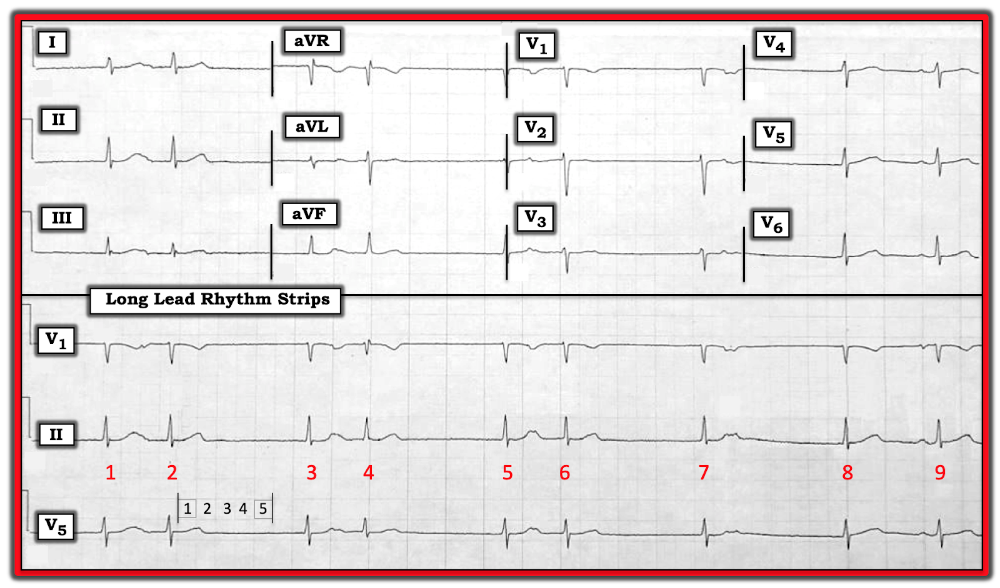
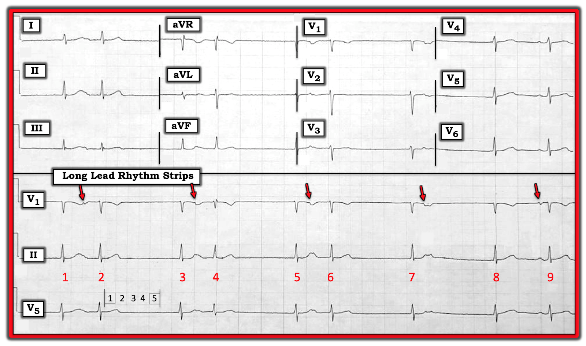
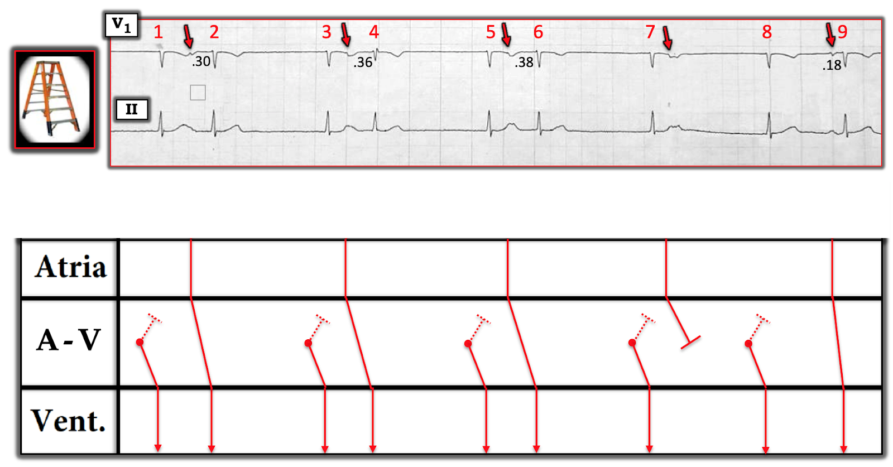
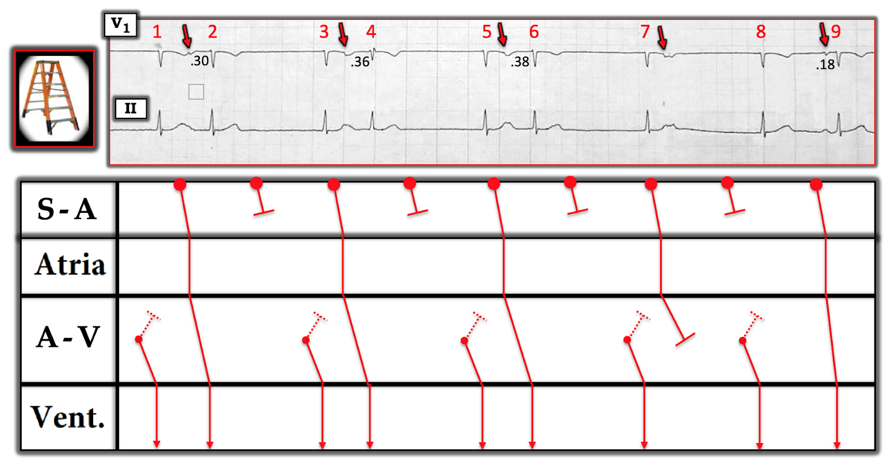

ECG Blog #163 (Thoát–Bắt được – Wenckebach – Blốc SA)
Bạn được yêu cầu đọc điện tâm đồ trong Hình-1 mà không có thông tin lâm sàng hỗ trợ.
- Bạn đọc nhịp này như thế nào?
- Trên đường đi tới chẩn đoán điện tâm đồ — có rất nhiều nhận xét thú vị cần được đưa ra. Bạn có thể nêu ra được bao nhiêu nhận xét?
- Biết rằng bạn chưa được kể bệnh sử lâm sàng — Những cân nhắc xử trí quan trọng nhất có khả năng là gì?


=========================
LƯU Ý: Điện tâm đồ 12 chuyển đạo và các dải nhịp đi kèm trong Hình-1 được ghi ở tốc độ chuẩn 25mm/giây. Vì lưới điện tâm đồ bị mờ — tôi đã đánh dấu kích thước một ô lớn bằng màu XÁM, đồng thời thể hiện độ dài của 5 ô lớn ( = 1.0 giây) bằng các chữ số nhỏ màu ĐEN nằm ngay phía trên bản ghi chuyển đạo dài V5 ở cuối Hình-1.
=========================
Cách Tiếp cận của tôi: Đây là một bản ghi phức tạp! Tôi tin rằng có nhiều hơn một cách diễn giải khả dĩ. Với hy vọng Cách tiếp cận của tôi có thể giúp ích — tôi liệt kê dưới đây Quá trình suy luận từng-bước của mình:
- Tôi bắt đầu bằng việc xem 3 dải nhịp chuyển đạo dài ở cuối bản ghi. Tôi dám nói rằng bạn sẽ không thể đọc được nhịp tim trong ca này nếu chỉ nhìn vào điện tâm đồ 12 chuyển đạo. Thay vào đó — việc chú ý tới một hoặc nhiều dải nhịp chuyển đạo dài là thiết yếu!
- Nhận xét #1: Có vẻ như có nhịp theo nhóm (group beating) trong ít nhất một phần của bản ghi. Tức là — có 3 nhóm, mỗi nhóm 2 nhát (nhát #1-2; #3-4; và #5-6) — trước khi nhịp trở nên không đều ở 3 nhát cuối của bản ghi. Nhận ra nhịp theo nhóm là hữu ích — vì nó cho bạn biết ngay từ đầu rằng có thể đang có một dạng nào đó của Wenckebach trong dẫn truyền. Mặt khác, vì có vài nhóm nhát ghép đôi, mỗi nhóm theo kiểu “ngắn-dài” — cũng có thể có một dạng nhịp đôi.
- Trước khi đi xa hơn — hãy tìm một chiếc Compa đo (calipers)! Tôi dám nói rằng bạn sẽ không thể nắm bắt (hay diễn giải) những điểm tinh tế của rối loạn nhịp phức tạp này nếu không (cho đến khi) bạn dùng compa đo.
- Tất cả các phức bộ QRS trong bản ghi này đều hẹp! Có thể bạn đã nhận thấy nhát #4 trông hơi khác so với 8 nhát còn lại trong bản ghi (đặc biệt ở dải nhịp chuyển đạo dài V1). Như một điểm nâng cao (không làm thay đổi kết luận cuối cùng của chúng ta về nhịp ở đây) — sự khác biệt về hình dạng QRS của nhát #4 nhiều khả năng phản ánh một mức độ dẫn truyền lệch hướng nhất định (biểu hiện với hình thái LAHB/RBBB không hoàn toàn) — Nhưng, Điều cốt lõi từ lần xem xét ban đầu nhịp trong Hình-1 — là đây là một nhịp trên thất (supraventricular).
Một khi đã xác định nhịp trong Hình-1 là nhịp trên thất (trong đó có nhịp theo nhóm ở một số đoạn của bản ghi) — thì MẤU CHỐT trở thành việc chọn dải nhịp chuyển đạo dài nào cho thấy rõ nhất các sóng P. Việc này thật sự khó — vì biên độ sóng P rất nhỏ (nếu sóng P có thấy được) ở hầu như mọi chuyển đạo của bản ghi này.
- Khi lần đầu xem Hình-1 — tôi KHÔNG hề biết liệu có nhịp xoang nền hay không — hoặc, liệu sóng P có không đều — hoặc, liệu có các nhát đến sớm — hoặc, liệu chỉ một số sóng P được dẫn xuống thất, còn các sóng P khác được dẫn truyền ngược dòng — hoặc, liệu có phân ly nhĩ thất một phần hay hoàn toàn.
- Mặc dù phần lớn trường hợp, chuyển đạo II là chuyển đạo tốt nhất để nhận diện hoạt động sóng P xoang bình thường — điều này không đúng trong Hình-1. Đó là vì, ngoại trừ sóng P xuất hiện ngay trước nhát #9 — các biến thiên có thể là sóng P đều quá nhỏ (và bị đoạn ST đứng trước làm biến dạng quá nhiều) ở chuyển đạo II để có thể nhận diện một cách chắc chắn.
- Nhận xét #2: Hoạt động nhĩ thấy rõ nhất ở dải nhịp chuyển đạo dài V1! (các mũi tên ĐỎ trong Hình-2).


Chúng tôi nhấn mạnh các điểm sau về Hình-2:
- Lý do chúng tôi biết các biến thiên sóng P hai pha (dương-rồi-âm) biên độ nhỏ ở chuyển đạo V1 xuất phát từ nút xoang (SA) — là vì sóng P ở chuyển đạo V1 xuất hiện ngay trước nhát #9 tương ứng với sóng P xoang dương có khoảng PR bình thường được thấy ở chuyển đạo II ngay trước chính nhát #9 này.
- Dùng compa đo — chúng ta có thể “đi” được một khoảng P-P đều đến bất ngờ (với dao động tối thiểu) giữa từng mũi tên ĐỎ trong Hình-2. Khoảng P-P này đo được dưới 10 ô lớn một chút — tương ứng với tần số sóng P xoang ~32/phút.
Tiếp tục đánh giá với một số nhận xét bổ sung về Những gì chúng ta Biết là đúng:
- Nhận xét #3: Các nhát #1, 3, 5, 7 và 8 đều là nhát thoát bộ nối! Chúng ta biết điều này — vì: i) Không nhát trên thất nào trong số này có sóng P đứng trước ở chuyển đạo II; ii) Khoảng R-R đứng trước mỗi nhát thoát bộ nối này hầu như giống hệt nhau (tức là, khoảng R-R giữa nhát #2-3; giữa nhát #4-5; và giữa nhát #6-7 và 7-8 = hơn 7 ô lớn một chút). Điều này tương ứng với tần số thoát bộ nối ~300 ÷ 7+ ~41/phút (nằm trọn trong khoảng tần số thoát bộ nối thông thường từ 40-60/phút); và, iii) Khoảng R-R đứng trước nhát dẫn truyền từ xoang ở cuối bản ghi ( = khoảng R-R trước nhát #9) rõ ràng ngắn hơn khoảng R-R đứng trước mỗi nhát thoát bộ nối. Manh mối tốt nhất cho thấy sóng P dương ở chuyển đạo II đứng trước nhát #9 đang được dẫn truyền — là nhát #9 xuất hiện sớm-hơn-dự-kiến khi xét đến thời điểm của các nhát thoát bộ nối.
- Nhận xét #4: Xem riêng dải nhịp chuyển đạo V1 dài — các nhát #2, 4 và 6 đều có một sóng P đứng trước (các mũi tên ĐỎ) — và mỗi nhát này đều xuất hiện sớm-hơn-dự-kiến. Điều này khiến tôi nghi ngờ rằng từng nhát này (#2,4,6) bằng cách nào đó đang được dẫn truyền! Mối liên hệ này = một nhát bộ nối theo sau là một sóng P rồi sóng P đó “bắt được” (tức là, dẫn xuống) tâm thất, gợi nhớ tới hiện tượng Nhịp “Thoát-Bắt được” (Escape-Capture), điều này thu hẹp các khả năng chẩn đoán ...
- Nhận xét #5: Dùng compa đo — khoảng PR đứng trước các nhát #2, 4 và 6 là không như nhau! Vậy, nếu các nhát #2, 4 và 6 đang được dẫn truyền — hẳn phải có lý do nào đó khiến khoảng PR đứng trước các nhát này thay đổi ...
- Nhận xét #6: Không có phức bộ QRS nào theo sau sóng P (mũi tên ĐỎ) xuất hiện ngay sau nhát #7. Nhiều khả năng nhất là vì khoảng RP của sóng P đặc biệt này (tức là, khoảng cách từ QRS của nhát #7 tới sóng P theo sau nó) ngắn hơn khoảng RP sau các nhát #2, 4 và 6 — do đó rơi vào thời kỳ trơ tuyệt đối sau nhát #7.
=========================
ĐIỀU CỐT LÕI: Cơ chế của nhịp trong Hình-2 là phức tạp. Mặc dù hơn 40 năm kinh nghiệm đọc rối loạn nhịp đã giúp tôi đọc rất nhanh tuyệt đại đa số các nhịp mình gặp chỉ bằng quan sát đơn thuần — thỉnh thoảng, tôi cần dựng một giản đồ bậc thang (laddergram) để có thể đưa ra giả thuyết hợp lý (và minh hoạ) về những gì tôi tin là đang diễn ra. Cái hay của việc vẽ Giản đồ bậc thang — là “một bức hình nói lên 1,000 lời” (Hình-3).
=========================


=========================
Diễn giải Giản đồ bậc thang: Nhịp nền trong Hình-3 là nhịp chậm xoang. Như đã nêu ở trên — khoảng P-P giữa các mũi tên ĐỎ ở chuyển đạo V1 của Hình-3 có độ dài dưới 10 ô lớn một chút — tương ứng với nhịp chậm xoang với tần số ~32/phút.
- Do hậu quả của nhịp chậm xoang rõ rệt này — ổ tạo nhịp thoát bộ nối với tần số cố định ~41/phút (Xem Nhận xét #3) có thể chiếm quyền điều khiển nhịp (các nhát #1, 3, 5, 7 và 8) — cho đến khi sóng P xoang cuối cùng trên dải nhịp tình cờ xuất hiện tại một thời điểm (ngay trước nhát #9) trong chu kỳ mà nó có thể bắt được (dẫn xuống) tâm thất.
- Tôi đặt giả thuyết trong Giản đồ bậc thang (Hình-3) — rằng các nhát bộ nối ( = các vòng tròn ĐỎ nhỏ ở tầng nút AV) không dẫn truyền ngược hết đường về tới tâm nhĩ (các đường chấm chấm kết thúc bằng một đầu cụt chấm chấm bên trong tầng nút AV). Người ta đã chứng minh rằng mức độ blốc xuôi dòng đối với các xung động đi vào nút AV có thể khác với mức độ blốc AV ngược dòng đối với các xung động được dẫn truyền ngược về tâm nhĩ. Tôi chọn vẽ giản đồ bậc thang trong Hình-3 với giả thuyết có blốc AV hoàn toàn theo chiều ngược dòng đi ra khỏi nút AV.
- Các sóng P theo sau 3 nhát thoát bộ nối đầu tiên có dẫn xuống tâm thất — nhưng với khoảng PR tăng dần (tăng từ 0.30 -lên- 0.36 – rồi 0.38 giây) — cho đến khi sóng P tiếp theo (xuất hiện ngay sau nhát #7) không dẫn truyền được. Sự tăng dần khoảng PR sau các nhát thoát bộ nối cho đến khi một sóng P không dẫn truyền được là một dạng Wenckebach khác thường, vì nó xảy ra sau một chuỗi nhát thoát bộ nối. Phù hợp với Wenckebach — sóng P đúng lúc kế tiếp (xuất hiện ngay trước nhát #9) được dẫn truyền với khoảng PR ngắn hơn và bình thường ( = 0.18 giây).
CÂU HỎI: Liệu có thể có một cách giải thích khác cho lý do tần số sóng P xoang trong Hình-3 chậm như vậy (tức là, ~32/phút)?
- GỢI Ý: Sẽ ra sao nếu tần số phát xung của nút xoang (SA) trong Hình-3 nhanh gấp đôi so với những gì chúng ta thấy trong Hình-3 ( tức là, ~64/phút)?
=========================
TRẢ LỜI: Có lẽ thay vì tần số sóng P chậm quá mức 32/phút — tần số phát xung của nút xoang là 64/phút — với chỉ một trong mỗi hai xung động của nút xoang có thể "thoát ra" khỏi nút xoang do có blốc SA 2:1?
- Tôi xin nhấn mạnh rằng chúng ta không thể chứng minh có blốc SA 2:1 chỉ từ một điện tâm đồ duy nhất được cung cấp. Nhưng có vẻ hợp lý khi đặt giả thuyết về một tần số xoang hợp lý hơn ~64/phút ở bệnh nhân này, người dường như biểu hiện nhiều rối loạn dẫn truyền (tức là, blốc SA, dẫn truyền Wenckebach khi đi qua nút AV + blốc AV hoàn toàn khi dẫn truyền ngược dòng ra khỏi nút AV).


Những cân nhắc về Xử trí: Vấn đề chính của điện tâm đồ trong Hình-1 là nhịp chậm — hoặc do nhịp chậm xoang rõ rệt ~32/phút, hoặc do blốc SA 2:1. Ngoài ra — có dẫn truyền Wenckebach của các xung động xoang bắt được. Cuối cùng — có nhịp thoát bộ nối ~42/phút, để đáp ứng với tần số sóng P xoang quá chậm trên điện tâm đồ này.
- Nhiều khả năng nhịp thoát bộ nối sẽ biến mất — NẾU khôi phục được một tần số nhịp xoang hợp lý. Nếu vậy — dẫn truyền Wenckebach cũng có thể biến mất.
Biết rằng chúng ta chưa được cung cấp bất kỳ bệnh sử lâm sàng nào của bệnh nhân này — các nguyên nhân thường gặp của nhịp chậm rõ rệt + rối loạn dẫn truyền nút AV và/hoặc nút xoang (SA) ở người lớn bao gồm:
- Thiếu máu cục bộ/nhồi máu gần đây (dù KHÔNG có bằng chứng nào về điều này trên điện tâm đồ 12 chuyển đạo trình bày trong Hình-1).
- Ngưng thở khi ngủ.
- Các thuốc làm chậm tần số tim (tức là, thuốc chẹn beta, verapamil-diltiazem, digoxin, amiodarone).
- Suy giáp.
- SSS ( = Sick Sinus Syndrome – hội chứng suy nút xoang) — là một chẩn đoán loại trừ, chỉ được đưa ra sau khi đã loại trừ các nguyên nhân khác nêu trên.
ĐIỀU CỐT LÕI: Nếu không tìm được một nguyên nhân có khả năng điều chỉnh được của tình trạng nhịp chậm rõ rệt — thì nhiều khả năng sẽ cần đến máy tạo nhịp.
================================
Lời cảm ơn: Xin cảm ơn Robert Drutel đã cho phép tôi sử dụng bản ghi và ca lâm sàng này.
================================

- Xem ECG Blog #188 — để ôn lại cách Đọc (và/hoặc Vẽ) Giản đồ bậc thang.
- Để biết thêm về Blốc SA — Bấm vào Hình-5: